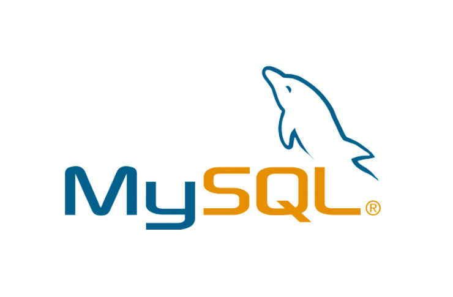

I have a strong foundation in HTML and am skilled in creating and structuring web pages using HTML5. I have experience in creating semantic HTML markup, which is essential for improving website accessibility, search engine optimization, and maintainability.
I am proficient in using HTML tags and attributes to create properly formatted headings, paragraphs, lists, tables, forms, and multimedia elements such as images and videos. I understand the importance of writing clean and readable HTML code that is easy to understand and maintain.
My skills


I have a strong foundation in CSS and am skilled in creating visually appealing and responsive web designs using CSS3. I have expertise in using CSS to style and layout HTML elements, creating custom CSS classes and IDs, and using responsive design techniques to ensure web pages display correctly on a variety of devices.
I am proficient in using CSS to create visually engaging designs, such as using gradients, shadows, and other effects to enhance the visual appeal of a webpage. I am also skilled in creating complex layouts using CSS Grid or Flexbox, which allows me to create dynamic and responsive web designs that adapt to the size of the user's screen.

I have experience in using Bootstrap to create responsive and visually appealing web designs. I have a strong understanding of Bootstrap's grid system and the various components it offers, such as navigation bars, forms, and modals.
I am skilled in using Bootstrap's pre-built CSS classes and customizing them as needed to achieve the desired design and functionality. I can also create custom Bootstrap themes using Sass or Less, allowing me to create unique and personalized designs that match the client's brand and style.

I have a strong foundation in JavaScript and am skilled in creating dynamic and interactive web applications using vanilla JavaScript. I am proficient in using JavaScript to manipulate the Document Object Model (DOM) of a webpage, creating event-driven programming, and using AJAX to interact with external
I am skilled in using modern JavaScript features such as ES6 syntax, arrow functions, and template literals to write clean, concise, and maintainable code. I am also experienced in using JavaScript libraries such as jQuery, Lodash, or Moment.js to simplify complex tasks and speed up development, if needed.

I have a strong foundation in PHP and am skilled in creating dynamic and interactive web applications using pure PHP, without relying on any frameworks. I am proficient in using PHP to interact with databases, handle user input, and create dynamic web pages using PHP's templating features.
I am skilled in using modern PHP features such as namespaces, closures, and anonymous functions to write clean, concise, and maintainable code. I am also experienced in using PHP libraries such as Swift Mailer or PHPMailer to send emails, or PHPExcel to manipulate Excel files.

I have a strong foundation in MySQL and am skilled in creating and managing relational databases using this technology. MySQL is a widely used database management system that is known for its speed, reliability, and scalability.
I am proficient in using MySQL to design and create database schema, tables, and indexes. I am also experienced in using SQL, the language used to interact with MySQL, to perform various operations such as retrieving data, inserting new data, updating existing data, and deleting data.
In addition to database design and management, I am familiar with using MySQL with popular programming languages such as PHP and Python. I can create database-driven web applications and APIs, handle database connections, and use middleware to enhance the functionality of web applications.